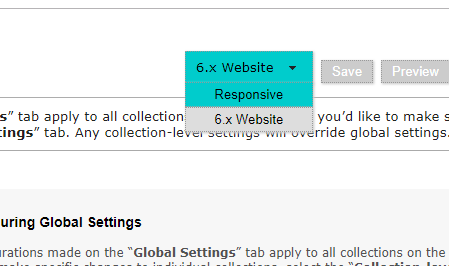

how to edit the KGI homepage
if you must
-
Open your file explorer and navigate to
S:\ContentDM\ResponsiveSiteFiles\KGIresponsive- right-click on
home.htmland choose Edit with Notepad++ - you should see something like this (fonts and colors will vary):
- make the necessary changes
- add one(1) to the version number at the very top of the file:
- save!
- leave the file explorer open

- right-click on
-
Open your web browser and navigate to
the ContentDM website configuration tool- log in
- change the tealish-colored box at the top of the page to say
Responsiveinstead of6.x Website
- on the left-hand side of the page, click
Page Typesand thenHome Page - scroll to the bottom of the page
- next to the field for
Custom html, click thebrowsebutton - the file upload window should come up:
- drag
home.htmlover from the file explorer - it will automatically replace the previous version
- all done!